Programmazione a vincoli o constraint programmmig è una tecnica utilizzata per risolvere problemi CSP o COP.
Alcune applicazioni pratiche riguardano i problemi gestionali, come la pianificazione dell'orario dei treni o la gestione dei porti.
La risoluzione di uno di questi problemi si basa sempre sulla costruzione di un modello, in modo analogo alla Programmazione Lineare, solo che nella modellazione non venogno utilizzate le equazioni lineari.
Alcuni dei vantaggi dell'approccio utilizzato dalla programmazione a vincoli sono:
Tipologia di problemi che comprende:
Questi problemi hanno lo stesso pattern di risoluzione:
Su un foglio di carta è più semplice da fare, in CP si cerca di formalizzare queste cose per un computer.
CSP = \<X,D,C\>
- X: insieme di variabili, con xi si indica una variabile dell'insieme;
- D: insieme di domini, xi ha dominio D(xi);
- C: insieme di vincoli, cj è definito su un sottoinsieme di varibili, X(cj) e viene detto ambito del vincolo (scope in inglese).
Tupla: sequenza fissata di valori.
Relazione: Data S sequenza di insiemi = S0, S1, S2, ecc. Una relazione R su S è un sottoinsieme del prodotto cartesiano della sequenza S.
Un vincolo è quindi una sorta di tabella con tutti i possibili valori validi (feasible) per le relazione definite tra i vari domini delle variabili del problema.
Una soluzione per un CPS è quindi tupla definita sul prodotto cartesiano di tutti i domini che è consistente con tutti i vincoli. Una soluzione è quindi una relazione sull'insieme dei domini:
τ ∈ ∏[xi ∈ X]D(xi) : π(τ,X(cj)) ∈ cj, ∀cj ∈ C
Un CSP senza soluzione si dice infisable, senza soluzione.
Un CSP può essere definito con ogni tipo di dominio e vincolo. Tipicamente come domini vengono utilizzati:
Nel corso noi useremo domini interi finiti (finite domains), con i quali è possibile utilizzare qualsiasi tipo di vincolo, rappresentandolo in forma estensionale, cioè andando ad enumerare tutti i possibili assegnamenti di variabili che lo soddisfano. Questa modellazione dei vincoli però è scomoda e inefficente, e tipicamnete viene utilizzata la forma "intensional"
Per esprimere dei vincoli con questa forma vengono utilizzate delle Constraint libraries, delle collezioni di tipologie di vincoli come:
Ad esempio, utilizzando queste due tipologie di vincoli è possibile andare a modellare il problema della colorazione della cartina del nord italia con:
L'idea è che alcuni valori per determinate variabili non potranno mai essere usati in una soluzione, questo perché eseguendo uno di questi assegnamenti alcuni vincoli vengono violati.
Si può quindi andare a filtrare per un determinato vincolo, cioè rimuovere dai domini delle variabili alcuni valori che sono sicuramente non soddisfacibili. Questo processo prende il nome di filtering, mentre l'atto di rimuovere un valore viene detto pruning.
Il filtering fatto da un vincolo può permettere ad un altro vincolo di fare ulteriore filtering, in questo caso si dice che fa propagation.
La propagazione viene effettuata mediante un algoritmo e secondo determinate regole definte all'interno della cosntraint library.
dirty = true
white dirty:
dirty = false
for cj in C:
dirty = dirty or cj.filter()
Assumendo che cj.filter() ritorni true se il filtering ha tagliato dei valori.
AC1 raggiunge sempre un punto fisso che non dipende dall'ordine in cui sono stati processati i vincoli.
Ciò si dimostra introducendo la funzione filteredc(D) che applica l'algoritmo di filtering per il vincolo c nel dominio D e ritorna il dominio filtrato. Dal momento che questa può solo togliere dei valori è ovvio che dopo un numero finito di passi la funzione non sarà più in grado di rimuovere valori, raggiungendo così un punto fisso, che nel caso pessimo è dato dall'insieme vuoto.
La funzione filteredc(D) è anche monotona, filtrare un dominio di partenza già filtrato, può solo produrre un insieme ulteriormente filtrato.
Tutto questo prende il nome di Fix Point Theorem.
Una conseguenza di questo teorema è che l'ordine secondo il quale viene effettuato il filtering non influisce sul risultato. Tuttavia l'ordine con cui eseguo il filtering influisce sul numero di iterazioni necessarie e determinare l'ordine migliore è un problema NP-difficile.
Dopo aver filtrato e propagato non sempre si ottiene una soluzione, in questo caso è necessario andare a tentativi, cioè scegliere una variabile ed assegnarle uno dei possibili valori.
def DFS(CSP):
if sol_found: return true
if infeasible: return false
for dec in decisions(CSP):
if DFS(apply(dec, CSP)): return true
return false
L'algortimo fa backtracking, cioè se non raggiunge una soluzione, distrugge il ramo decisionale che ha seguito e ne inizia un'altro.
Per determinare che un problema è infiseable bisogna valutare i domini delle variabili, se uno di questi è vuoto allora il problema non ha soluzione (domain wipeout).
La funzione decision(CSP) usa l'insieme dei vincoli per scegliere un valore per una variabile unbound, cioè una variabile alla quale non è ancora stato assegnato un valore e il cui dominio contiene più valori.
Una possibile decisione può essere quella di selezionare il valore minore presente nel dominio di una variabile e provare ad eseguire l'assegnazione, creando così un ramo decisionale. Viene poi creato un altro ramo nel quale la variabile viene posta diversa dal valore scelto.
Dopodiché si prosegue l'esplorazione dell'albero lungo il primo ramo decisionale e se si arriva ad una soluzione infeasibile viene effettauto il backtracking.
Dopo aver preso una decisione, questa viene propagata utilizzando AC1, restringendo ulteriormente l'ambito delle possibili scelte.
GIF: DFS PLS
La risoluzione di un problema di CP può essere vista in 3 fasi:
Restringendo lo spazio di ricerca a partire da un'insieme di domini D0,D1,... si arriva ad un altro un'insieme D0',D1'... tale che D0' ⊆ D0,...
Questo può essere visto come una generalizzazione dell'operazione di assegnamento, che cattura l'effetto del filtering e della ricerca.
Un vincolo si dice risolto se coincide con il prodotto cartesiano dei domini delle variabili nel suo scope.
cj=∏[xi</subx> ∈ X(cj)] D(xi)
Cioè effettuando il prodotto cartesiano dei domini di tutte le variabili presenti nel vincolo, questo prodotto contiente solo relazioni che soddisfano il vincolo, generalizzando così la definizione di feasibility di un assegnamento.
È una restrizione di tutti i domini tale che tutti i vincoli siano risolti, cioè ogni possibile assegnamento di tutte le variabili soddisfa tutti i vincoli del problema, ovvero è una soluzione.
D′(xi) ∀xi ∈ X : ∀cj ∈ C, cj = ∏[xi∈X(cj)]D′(xi)
Una caso particolare di questa generalizzazione è quando tutti i domini di tutte le variabili sono dei singoletti, cioè sono composti da un solo elemento.
Utilizzando questi concetti di generalizzazione è possibile andare a migliorare gli algoritmi di ricerca e filtering.
def DFS(CSP):
if gen_sol_found(CSP): return True
if infeasible(CSP): return False
for dec in decisions(CSP):
if DFS(apply(dec, CSP)): return True
return False
L'algoritmo di ricerca base può essere ottimizzato facendolo terminare quando viene trovata una soluzione generalizzata, permettendo così di terminare prima la ricerca.
Allo stesso modo può essere modificato AC1 in modo che se un vincolo è già risolto, allora non venga eseguito il filtering per tale vincolo.
dirty = True
while dirty:
dirty = False
for cj in C:
if not resolved(cj, CSP):
dirty = dirty or cj.filter()
Per effettuare queste ottimizzazioni è necessario poter determinare se il vincolo è risolto o meno e non sempre questo è possibile.
Da notare che, nel caso si ottengano dei domini singoletti dopo aver filtrato per un vincolo, non è più conveniente eseguire altro filtering con quel vincolo, dal momento che più di così non si può fare.
N-Queens: si vogliono disporre su una schacchiera NxN, N regine in modo che non si minaccino tra loro.
Per modellare questo problema è necessario focalizzarsi sulle decisioni da prendere e come conviene codificare tali decisioni.
Ad esempio come modello per questo problema si può usare una variabile per ogni colonna che specifica in quale riga della scacchiera è presente la regina.
In questo modo si ottiene un dominio per le variabili già ridotto e più compatto rispetto al modello che ha tante variabili quante sono le caselle della scacchiera.
Con questa modellazione i vincoli del problema diventano:
Problema: non sappiamo come modellare xj - xi ≠ v e non può essere definito un nuovo vincolo ad hoc perché questa strategia porterebbe ad avere un numero esponenziale di vincoli.
Lo stesso vincolo può essere implementato con x + y = z e z ≠ v, in questo modo definisco due vincoli elementari che possono essere combinati tra loro per creare vincoli più complessi.
Fortunatamente ci sono dei linguaggi di modellazione che eseguono il parsing automatico delle espressioni, permettendo di scrivere espressioni complesse senza preoccuparsi di definire i vincoli più semplici.
Queste espressioni possono essere aggiunte ad una libreria di vincoli come:
z=x+y sum constraintz=xy multiplication constraintz=|x| absolute value constraintz=min(x,y) minimum constraintdove:
z viene introdotta in automatico durante il parsing dell'espressione;z è una variabile o un'espressione (concettualmente vengono trattate allo stesso modo, anche se vengono implementate in modo diverso).x e y possono essere variabili, costanti o altre espressioni.Per poter utilizzare in modo efficente questi vincoli è andare a definire delle strategie per fare filtering.
Per quanto visto finora è necessario scrivere un'algoritmo di filtering per ogni vincolo utilizzato. Questo però può risultare problematico all'aumentare delle possibili tipologie di vincoli, perciò è necessario utilizzare un approccio sistematico a questo problema.
Si rimouve un valore v dal dominio D(X) se non supporta un determinato vincolo quando viene combinato con i valori del dominio D(Y).
Un valore v in D(x) si dice che ha un supporto se esiste un valore w in D(y) tale che (v,w) soddisfa un vincolo.
Quando tutti i valori presenti nei due domini hanno un supporto si dice che il vincolo c è consistente sugli archi (Arc Consistency). Se tutti i vincoli del CSP sono arc consistent, allora anche il CSP è arc consistent.
Viene usato il termine arco in quanto un CSP può essere visto come un grafo i cui nodi sono dati dalle variabili del problema.
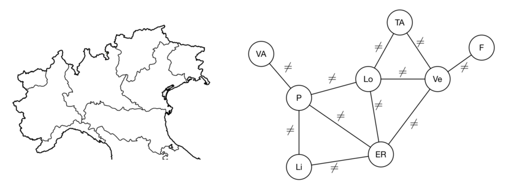
La consistenza sugli archi garantisce che, vincolo per vincolo, ogni assegnamento delle variabili porta ad una soluzione feasible e permette di formalizzare gli algoritmi di filtering.
Questa strategia funziona bene a livello locale, ma a livello globale no, in quanto la conistenza dei vincoli viene forzata vincolo per vincolo, senza tenere conto degli altri vincoli e quindi non è detto che il problema sia globalmente consistente.
Avere consistenza globale è complesso quanto risolvere il problema e dal momento che la complessità dell'algoritmo di filtering risulta particolarmente critica dal momento che deve essere eseguito più volte per ogni nodo e il numero di nodi cresce esponenzialmente, si preferisce forzare la consistenza locale che è meno complessa.
Ad esempio filtrare per la disuguaglianza di due valori viene fatto in tempo costante, mentre per l'uguaglianza è necessario un tempo lineare.
La definizione data per i vincoli binari non funziona nel caso dei vincoli con più variabili, sono quindi necessarie ulteriori generalizzazioni.
Generalizzazione di supporto: un valore di un certo dominio ha supporto se per tutte le altre variabili nello scope del vincolo esiste un altro valore tale che l'insieme dei valori riesce a soddisfare il vincolo.
Generalizzazione dell'Arc Consinstency: Un vincolo c è consistente sugli archi in modo generalizzato se ∀xi ∈ X(c) è possibile trovare un valore v ∈ D(xi) che ha supporto.
Fare filtering per il vincolo della somma ha una complessita cubica, tuttavia con un po' di ottimizzazioni si riesce ad ottenere una complessità quadratica, questo perché nel nostro sistema fare il look-up di un valore ha complessità costante).
z=x+y
Regole di filtering
Così facendo la complessità diventa quadratica nella dimensione di D(x) e D(z), cioè O(|D(x)|*|D(z)|).
Se i domini sono un intervallo interno e il minimo e massimo dell'intervallo del dominio hanno un supporto, allora anche tutti i valori nel mezzo hanno un supporto.
Si dice che un valore vi ∈ D(xi) ha supporto con Bound Consistency se e solo se, ∀xj ∈ X(c)∖{xi}, esiste un valore vj ∈ {min(xj)..max(xj)} tale che (v0,v1,...,vm-1) ∈ c
Un vincolo è BC se per ogni variabile del vincolo, sia il minimo che il massimo valore di quella variabile hanno un supporto.
In alcuni casi BC equivale a GAC anche se tipicamente questa tipologia di consistenza è più debole.
In ogni caso, sia la bound consistency che l'arc consistency garantiscono un domain wipeout nel caso non ci siano soluzioni. La differenza riguarda l'efficenza dei due algoritmi: AC è più costoso in termini di tempo ma permette di diminuire il tempo necessario alla ricerca, mentre BC è più veloce da applicare ma taglia meno valori, con un conseguente aumento del tempo necessario alla ricerca.
Applicando la bound consistency si cambia il problema di filtering, in quanto non si va a controllare il supporto dei valori uno a uno, ma si controllano solamente i valori dei domini, ottentendo un sistema più efficente. Così facendo bound consistency è più debole di GAC, specialmente nel caso in cui il dominio ha dei buchi, i quali non vengono considerati da BC.
Entrambi gli algoritmi di filtering sono incompleti.
AC risulta più efficace il che risulta in un tempo di ricerca minore, tuttavia risulta più costoso fare propagazione.
BC risulta meno efficace e la ricerca rimane costosa, tuttavia è molto veloce da propagare.
Tipicamente la maggior parte dei solver utilizzano BC al posto di AC, questo perché nei problemi reali tipicamente vengono utilizzati domini continui determinati da un intervallo.
Filtering su z
z = x + y
ubz = Min(Max(x) + Max(y), Max(z))
lbz = Max(Min(x) + Min(y), Min(z))
Filtering su x (analogo per y)
z = x + y
ubx = Min(Max(z) - Min(y), Max(x))
lbx = Max(Min(z) - Max(z), Min(x))
Filtering su z
z = x * y
ub = Max(Max(x)Max(y),Max(x)Min(y),Min(x)Max(y),Min(x)Min(y))--> Max(z) = ub
lb = Min(Max(x)Max(y),Max(x)Min(y),Min(x)Max(y),Min(x)Min(y))--> Min(z) = lb
La formula sembra è contorta, l'idea di base però è semplice, si cerca il massimo (o minimo) tra tutte le posssibili combinazioni dei bound dei due domini.
Filtrare su x è più complicato.
Filtering su z
z = |x|
ub = Max( |Max(x)|, |Min(x)| ) --> Max(z) = ub
lb = |Max( Min(x), Min(0, Max(x)) )| --> Min(z) = lb
Filtering su x
z = |x|
# Filter based on Max(z)
if Max(x) > Max(z): Max(x) = Max(z)
if Min(x) < -Max(z): Min(x) = -Max(z)
# Filter based on Min(z)
if Min(x) ≥ 0:
# x cannot be negative
if Min(x) < Min(z): Min(x) = Min(z)
if Max(z) < 0:
# x cannot be positive
if Max(x) > -Min(z): Max(x) = -Min(z)
Filtering su z
z = Min(x,y)
ub = Min(Max(x), Max(y)) --> Max(z) = ub
lb = Min(Min(x), Min(y)) --> Min(z) = lb
Filtering su x (analogo per y)
z = Min(x,y)
Max(x) > Max(z), Min(y) > Max(z) --> Max(x) = Max(z)
Min(x) < Min(z) --> Min(x) = Min(z)
Con BC, tipicamente non si reisce a tagliare entrambi i domini, o si taglia quello di z o quello di x e y.
Pertanto la condizione minima per cui un algoritmo di filtering sia utile è che vada a fare il test di accettabilità dei buond dei domini.
Tra la lezione 3 e 4 ci sono stati due laboratiori.
In alcuni casi, in CP può essere necessario trovare più soluzioni oppure sapere quante sono le possibili soluzioni.
Per risolvere questo problema di enumerazione l'algoritmo di ricerca DFS diventa:
def DFS(CSP):
if sol_found(CSP):
process solution
return
if infeasible(CSP): return
for dec in decisions(CSP):
DFS(apply(dec, CSP))
or-tools funziona in modo simile, ogni volta trova una soluzione si mette in pausa in modo da porterla utilizzare con il metodo NextSolution().
COP = \<X, D, C, f\>
È un CSP con una funzione (o espressione) obiettivo che deve essere minimizzata (si può ottenere una massimizzazione negando la funzione).
Qual'è il numero minimo di colori per colorare le regioni del nord Italia?
La definzione del modello è analoga a quella del relativo CSP, con la differenza che il dominio delle variabili va da 0 a n-1, dove n è il numero delle regioni.
Serve però una funzione obiettivo:
f(x) = Max[i = 0 ... n-1](xi)
L'idea principale è che risolvere un COP coincide con il risolvere una serie di CSP.
Ci sono vari approcci a questo tipo di problema, ma ci sono due filoni principali:
Si itera sui valori v del dominio di f(x) a partire dal lower bound, ad ogni iterazione si pone il vincolo f(x) <= v e si risolve il CSP.
Probabilmente i primi CSP sono infiesible, però la prima soluzione che viene trovata risulta anche essere ottima.
Questo approccio viene chiamato descrutive perché ad ogni iterazione si butta via tutto quello calcolato per l'iterazione precedentemente.
sol = None # Current best solution
solved = False # Outcome of the last solution attempt
lb = safe lower bound
while not solved:
P = ⟨X,D,C ∪ {f(x) ≤ lb}⟩
solved = solve(P)
if solved: sol = found solution
else: lb += 1
Stesso ragionamento solo che si parte dal massimo valore di f(x), è importante che il valore di partenza permetta di raggiungere una soluzione.
Ad ogni iterazione si usa v = f(x) - 1, cioè il costo della soluzione trovata al passo precedente -1 in modo da provare a migliorare.
L'ultima soluzione trovata è quella ottima.
Il vantaggio di questo algoritmo è che può essere interrotto in ogni momento e fornisce comunque una soluzione anche se questa non è ottima.
Questo fatto è molto importante perché la maggior parte dei COP è NP-Difficile.
sol = None # Current best solution
solved = True # Outcome of the last solution attempt
ub = safe upper bound
while solved:
P = ⟨X,D,C ∪ {f(x) ≤ ub}⟩
solved = solve(P)
if solved:
sol = found solution
ub = sol(f(x)) - 1
La versione che usa il lower bound riesce a fare più propagazione risultando più efficiente anche se il problema che si va a risolvere probabilmente non ha soluzione e quindi bisogna esplorare tutto l'albero.
Ovviamente la versione che usa il lower bound non è anytime però fornisce un lower bound che in alcuni casi può essere più interessante.
I passi del lower bound invece sono molto corti.
Per quanto riguarda la versione upper, questa funziona come duale del lower bound, i passi dell'algoritmo sono più grandi, si trova a risolvere problemi per la maggior parte feasbile e quindi ci mette meno tempo.
Di contro non trova un lower bound e c'è meno propagazione dei vincoli.
È la combinazione dei due algoritmi, che effettua una ricerca binaria sul dominio di f(x).
L'idea è quella di tenere un upper bound feasbile e un lower bound infeasible e di rivolvere il problema per lb < f(x) < ub.
Se si riesce a trovare una soluzione per quel problema si aggiorna ub con il valore di f(x), altrimenti, se il problema è infeasible, si aggiorna lb con il valore di f(x).
L'algoritmo termina quanto viene trovata una soluzione f(x) = lb+1.
sol = None #Current best solution
lb = safe lower bound
ub = safe upper bound
while lb < ub:
P = ⟨X,D,C ∪ {f(x) > lb, f(x) < ub}⟩
solved = solve(P)
if solved:
sol = found solution
ub = sol(f(x))
else:
lb = sol(f(x))
In questo modo si ottiene un algoritmo di tipo anytime che calcola anche un lower bound, che funziona a passi più grandi e che permette di effettuare una buona propagazione dal momento che ci sono vincoli sempre più stretti su f(x).
Ma un altro grande vantaggio di questo approccio è l'optimality gap: se l'algoritmo viene fermato prima della terminazione si ottiene sia una soluzione per il problema CSP sia un indicatore della qualità della soluzione.
og = (ub - lb) / lb
Le ricerche hanno un problema: scartano la maggior parte delle informazioni ad ogni iterazione e questo porta a tanto lavoro ripetuto.
Nel B&B, ogni volta che si trova una nuova soluzione si va ad aggiungere un nuovo vincolo di Bound sul valore di f(x).
In questo modo, viene prima trovata una soluzione feasible, come nel caso di un CSP normale, dopodiché viene aggiunto un vincolo che rende infeasible la soluzione trovata. Una volta aggiunto il nuovo vincolo, la ricerca continua facendo il backtracking in modo da trovare una soluzione che soddisfi il nuovo vincolo. Se non viene trovata una soluzione migliore, l'ultima soluzione trovata è quella ottima.
Ad esempio, nel problema della colorazione della cartina, prima viene risolto il CSP utilizzando 5 colori, dopodiché viene aggiunto il vincolo "numero colori < 5 e la ricerca riprende dalla soluzione trovata.
GIF B AND B
Utilizzando il branch and bound in CP non c'è bisogno di calcolare per ogni nodo il lower bound, in quanto viene calcolato in modo automatico dai vincoli.
Quando l'algoritmo trova una soluzione, per capire che è ottima deve comunque andare ad esplorare tutto l'albero (optimality proof).
Alcuni problemi possono essere complessi da modellare o possono essere modellati con modelli binari (tipo il problema del trasporto magazzino/cliente tipico della Ricerca Operativa).
Implementare un CSP come modello binario ha dei problemi in quanto ci sono molte variabili e non si può fare tanta propagazione.
Non si riesce a modellare in modo efficace il problema dei trasporti, serve quindi una nuova tipologia di vincoli
z = (xi == j)
z = 1 se xi = j
z = 0 altrimenti
In partica z diventa una "variabile" che vale 1 se il vincolo è soddisfatto e 0 nel caso non lo sia, un concetto simile alle variabili binarie della programmazione lineare.
Si dice che il vincolo z è un vincolo reificato (reified constraing), cioè un espressione che corrisponde allo stato di soddisfacibilità di un vincolo.
Un meta-vincolo è quindi un vincolo definito utilizzando dei vincoli reificati.
Questa tipologia di vincoli sono molto utili per modellare un problema, tuttavia:
Il dominio di un vincolo reificato è sempre {0,1}, il valore 1 ha supporto se e solo se c'è la possibilità che il vincolo sia soddisfatto e lo stesso vale per il valore 0.
Si parla di dominio di un vincolo perché i vincoli reificati possono essere visti come delle variabili.
Se un vincolo reificato non è soddisfatto non vuol dire che il problema è infeasible, questo perché un vincolo reificato non è un vincolo del problema originale, ma è un modo di collegare lo stato di un vincolo ad una variabile.
Se (c) è il vincolo reificato per il vincolo c, prima è necessario filtrare per il vincolo c.
Se si ottiene un domain wipeout allora D(c) non contiene 1 e se c è risoloto, allora D(c) non contiene 0.
Servono per risolvere i problemi di soddifacibilità booleana (SAT) nei quali bisogna determinare se una clausola booleana è soddisfacibile.
Non serve andare ad aggiungere dei nuovi vincoli, si possono andare a riciclare alcuni vincoli già noti.
z = not x
z = (1 - x)
Se z e x sono variabili binarie le due esperessioni sono equivalenti.
In questo modo si possono riutilizzare le regole di filtering che vengono usate per le espressioni già note.
Allo stesso modo
z = x ∧ y
z = x * y oppure z = min(x,y)
z = x ∨ y
z = max(x,y)
Non serve quindi andare ad implementare i vincoli logici in quanto è possibile riutilizzare quelli aritmetici, in questo modo si può riutilizzare anche il filtering e il GAC.
Avendo un modo per mappare i vincoli logici basilari si possono anche andare a definire quelli più complessi come il ⇒ e ⇔, tuttavia la cosa diventa più verbosa.
x⇔y
diventa
max(xy,(1−x)(1−y))
Ma si può fare di meglio:
z = (x ⇒ y) = (x ≤ y) //Con un vincolo reificato
z = (x⇔y) = (x==y)
z = (x ⊕ y) (xor) = (x != y)
Utilizzando i metavincoli e i vincolo logici è possibile andare a definire dei vincoli più complessi come: Se x allora y.
Permettendo così di modellare tutte le relazioni combinatorie su variabili discrete.
Tuttavia questa non sempre è una buona idea perché così facendo si ottiene un modello grande e il filtering debole.
Questo perché i metavincoli potrebbero non esse GAC anche se tutti i vincoli individuali sono GAC.
L'algoritmo finora utilizzato è il seguente:
def DFS(CSP):
if sol_found(CSP): return True
if infeasible(CSP): return False
for dec in decisions(CSP):
if DFS(apply(dec, CSP)): return True
return False
Si può andare a migliorare cambiando la variable selection heuristic, cioè cambiare come si sceglie la variabile e value selection heuristic, cioè come scegliere il valore per fare il branching.
L'idea è quella di scegliere l'euristica migliore che permette di risolvere il problema.
Questa euristica risulta essere specifica per alcuni tipi di problemi, perché non è possibile trovare un euristica per risolvere un problema generico.
Nei problemi in cui si cerca solamente una soluzione, l'idea è quella di scegliere sia la variabile che il valore in modo che ci sia una maggior probabilità di arrivare ad una soluzione feasible.
Tuttavia questa strategia non limita il trashing, se si prende una decisione sbagliata e si genera tutto un sotto-albero infeasible è necessario esaminare tutto il sotto-albero prima di accorgersene.
Sarebbe bello avere un modo di limitare questo fenomeno.
Se le variabili hanno domini diversi, queste influenzano la struttura dell'albero di ricerca.
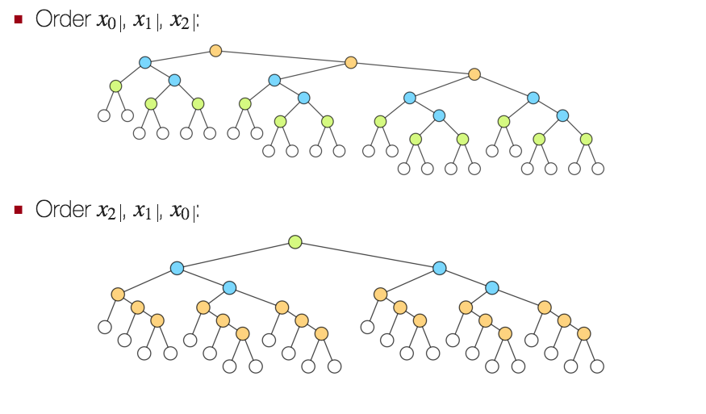

In genere scegliendo come variabile alla quale assegnare un valore, la variabile che ha il dominio più piccolo, si ottengono due grandi vantaggi:
Si cerca quindi di massimizzare la propagazione scegliendo variabili e valori in modo da causare un fail (first fail principle).
Quindi ricapitolando:
Di solito non si sa se il problema è feasible o infeasible, quindi si sceglie la variabile con il dominio più piccolo (si cerca il fail) e il valore che aumenta la probabilità di successo (varia da problema a problema).
Nelle precedenti puntate: scegli una variabile in modo che sia più probabile fallire e scegli un valore in modo che si più probabile trovare una soluzione.
Oltre a trovare la solzuone è necessario provare che sia ottima, è necessario qundi andare ad esplorare tutto l'albero.
Tipicamente si scelgono sia variabili che valori con la qualità più alta possibile in modo da ottenere subito una buona soluzione (in termini delle funzione obiettivo).
Così facendo, durante l'optimality proof si hanno dei vincoli più stretti che portano ad un pruning maggiore, velocizzando così il processo di ricerca.
Il tutto deriva dal fatto che facendo il B&B ogni volta che si trova una nuova soluzione si ottiene un nuovo vincolo e che per provare l'ottimialità è necessario esplorare tutto l'albero di ricerca.
Finora abbiamo fatto branching con un ramo x=v e uno x≠v, possono però essere usate strategia diverse, come:
In alcuni casi, come quando si lavora con intervalli di tempo, la scelta della variabile sulla quale fare branching influisce di molto sulle prestazioni.
Ad esempio è possibile assegnare il valore dei vincoli reificati a delle variabili ed utilizzare queste nuove variabili per fare branching.
In questo modo viene fatta della propagazione dei vincoli già nella fase di ricerca.
Rimane solo da assegnare un valore alle variabili. Questi valori possono essere assegnati facendo probing, utilizzando il minor start time possibile per ogni variabile.
Ottenendo così una soluzione ottima in poco tempo.
Se si fa branching sulle variabili che rappresentano gli start time delle attività, dal momento che i domini sono molto grandi, in vincolo che viene aggiunto durante il backtracking risulta molto debole.
Si può quindi utilizzare una variabile associata ad un vincolo reificato definito sulle precedenze per fare branching:
(si,j+di,j ≤ sh,k) ∨ (sh,k+dh,k ≤ si,j)
Viene riformulato in:
- (y(i,j),(h,k)=0) = (si,j+di,j ≤ sh,k)
- (y(i,j),(h,k)=1) = (sh,k+dh,k ≤ si,j)
Così facendo il branching viene fatto con y(i,j),(h,k)=0 e y(i,j),(h,k)≠0.
Per i rami di branching vengono quindi aggiunti i vincoli
- y = 0 --> si,j + di,j ≤ sh,k
- y ≠ 0 --> sh,k + dh,k ≤ si,j
Così facendo viene stabilito solamente un ordinamento delle attività, senza assegnare i vari start time. Serve quindi una seconda fase di ricerca per assegnarli.
La seconda fase può essere fatta in probing, assegnando ad ogni attività il minimo start time possibile. Il probing in questo caso è corretto, perché questra strategia di assegnamento produce sempre il migliore makespan.
Lo stesso problema può essere modellato in modi diversi, alcuni sono più semplici da modellare rispetto ad altri e allo stesso modo alcuni sono più efficenti di altri.
Inoltre, anche gli stessi vincoli possono influire sulle prestazioni, così come la scelta dei valori "farlocchi" va ad influire sulle prestazioni.
Ad esempio: se nel problema di pianificazione della produzione di una macchina, scelgo il valore -1 per rappresentare un ciclo di pausa posso ottenere delle prestazioni peggiori rispetto al modello che usa eoh o un altro valore per modellare tale ciclo. Questo dipende da come vengono scegli dal risolutore i valori da assegnare alle variabili.
Un altro problema è dato dalle simmetrie nelle soluzioni, che possono portare ad creare branch di ricerca inutili, pertanto può essere utile aggiungere dei vincoli per andarle a rimuovere.
Ad esempio, se devo produrre in serie 5 unità x1 ... x5 dello stesso prodotto, le due soluzioni [x1, x2, x3, x4, x5] e [x4, x2, x1, x3, x5] sono equivalenti, pertanto convine aggiungere dei vincoli che rimuovono queste soluzioni simmetriche.
La presenza di soluzioni simmetriche influisce sulla complessità della prova di ottimalità, aumentando il trashing.
Un modo per limitare questo problema è aggiungere dei vincoli che rompono queste simmetrie, tuttavia questo approccio potrebbe rallentare il processo di ricerca andando a rendere infeasible alcune delle soluzioni che il solver avrebbe trovato per prime.
Allo stesso modo, quando si tratta di allocare delle quantità di qualche materiale in dei contenitori identici, è possibili vincolare l'assegnamento x1 = 0, dal momento che la prima sostanza può essere messa indiscriminatamente in ognuno dei contenitori e ciò porta ad avere delle soluzioni simmetriche.
Può succedere che alcune delle soluzioni sub-ottime trovate dal risolutore abbiano determinate propiretà che garantiscono l'esistenza di una soluzione migliore.
Ad esempio un problema di makespan può avere una soluzione sub-ottima che produce più prodotti di quelli necessari. Se questa soluzione esiste, allora deve per forza esistere una soluzione migliore che produce l'esatto numero di prodotti necessari.
Più formalmente, date due proprietà di una soluzione P(x) e Q(x), con Q(x) preferibile rispetto a P(x), si ha una regola di dominanza se:
∃ solution x: P(x) ⇒ ∃ solution x′: Q(x′)
Pertanto è possibile aggiungere un nuovo vincolo che renda necessaria la proprietà Q(x) senza perdere soluzioni ottime.
Tornando all'esempio precedente:
È possibile aggiungere al modello il vincolo Q(x) senza perdere soluzioni ottime.
A differenza delle simmetrie, le regole di dominanza si applicano a soluzioni non equivalenti e risulta difficile applicarle in modo sistematico.
Tipicamente l'introduzione delle regole di dominanza diminuisce il numero di branch, però non è detto che il tempo di ricerca diminuisca perché la propagazione del nuovo vincolo potrebbe essere costosa.
In alcuni problemi di ottimizzazione può essere utile aggiungere dei vincoli rindondati del tipo:
z ≥ lb(x)
in modo da ottenere una propagazione migliore.
A differenza delle regole di dominanza o della rottura di simmetrie, questi vincoli non modificano lo spazio delle soluzioni ma potrebbero rendere più efficace la propagazione.
Ad esempio, in un problema di produzione, se è necessario produrre in tutto n prodotti, il makespan minimo sarà n, pertanto è possibile aggiungere il vincolo z ≥ n per ottenere una propagazione migliore, senza perdere soluzioni.
Possono essere sia di variabile che di valore.
Quelle di variabile si verificano quando, data una soluzione feasible è possibile scambiare (ri-assegnare) i valori delle variabili ed ottenere comunque un'altra soluzione feasible. Nelle N-Regine equivale a ruotare la scacchiera sull'asse Y.
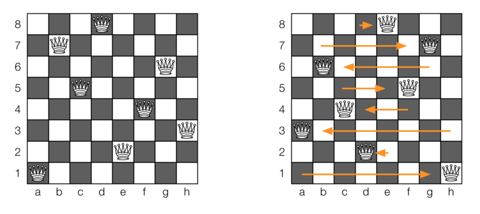
In quelle di valore invece si va a permutare i vari valori (ridare il nome ai valori), ad esempio in N-Regine c'è una simmetria di valori se si fa una rotazione orizzontale della scacchiera.
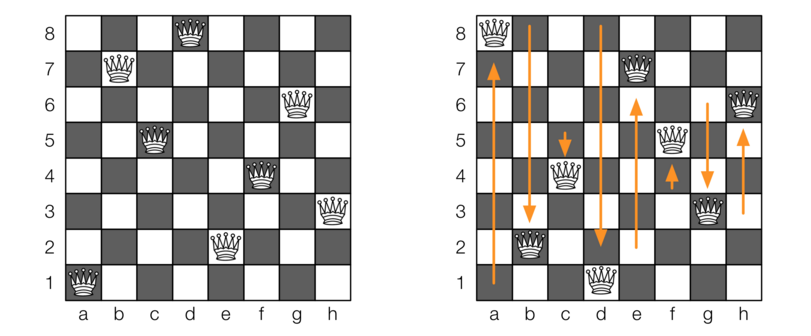
Per rompere queste simmetrie è possibile:
È una strategia per rompere le simmetrie di variabile in modo statico.
L'idea è quella di imporre un ordine lessicografico tra le varie variabili in modo che solo una delle soluzioni simmetriche sia valida.
Deve però essere disponibile la lista di tutte le possibili permutazioni.
Di contro però vengono aggiunti dei vincolo grandi e il numero di vincoli da aggiungere cresce in modo fattoriale rispetto al numero di simmetrie.
Caso speciale: se c'è un vincolo che impone che le varie variabili siano tutte diverse tra loro allora è necessario aggiungere n-1 vincoli, anziché n!.
Il metodo statico porta ad aggiungere tanti vincoli e questi possono creare dei problemi alla strategia di ricerca, perché questi vincoli potrebbero andare a tagliare delle soluzioni simmetriche che sono trovate per prime dalla strategia di ricerca.
L'idea principale di questa strategia è quella di considerare i vincoli che rompono le simmetrie solo quando si fa backtracking. In questo modo quando si scende sul ramo sinistro non vengono tagliate le soluzioni simmetriche, ma, quando si fa backtracking, questi vengono considerati in modo da sfoltire il sotto albero destro.
Ad esempio facendo labeling fermandosi al primo valore simmetrico trovato.

Anche se viene stabilita la GAC può essere che sia ancora possibile eseguire del filtering.
Ad esempio nel problema del partial latin square è possibile ragionare a livello di colonna, in cui tutte le celle devono essere diverse.
Formalizzando, indicando con X l'insieme delle variabili presenti in una colonna e con V l'unione dei domini delle variabili, se si reisce a trovare un sottoinsieme di valori W⊂V e un sottoinsieme di variabili Y⊂X tale che:
|Y|=|W| e D(xi) ∈ W, ∀xi ∈ Y
Allora:
W prende il nome di Hall set di Y e i valori presenti in W saranno assegnati alle variabili presenti in Y, quindi è possibile togliere i valori presenti in W dai domini delle variabili che non sono in Y.
Formalmente, ∀W ⊂ V, Y ⊂ X con |Y|=|W|:
D(xi) ∈ W, ∀xi ∈ Y ⇒ D(xj) = D(xj)∖W, ∀xj ∈ X∖Y
Questo processo prende il nome di Hall set filtering e forza GAC su un intero set di variabili, come su un'intera colonna del partial latin square, utilizzando dei vincoli rindondanti.
Per codificare come vincolo D(xj)∖W, ∀xj ∈ X∖Y si può utilizzare una serie di congiunzioni di vincoli reificati:
<big>⋀</big>[xi ∈ Y](D(xi)∈W) ⇒ <big>⋀</big>[xj ∈ Y , v ∈ V∖W](xj≠v)
L'implicazione può essere codificata con un minore e uguale mentre la serie di ⋀ può essere codificata con un vincolo di minimo.
Può essere quindi definita un'esepression contained(xi, W, V) che deve valere 1 se D(xi) ∈ W. Il caso in cui D(xi) ∉ W non è interessante in quanto la progagazione vale solo se contained vale 1.
Per verificare che D(xi) ∈ W posso utilizzare:
<big>⋀</big>[v ∈ V∖W](xi≠w) = min[v ∈ V∖W](xi ≠ w)
Così facendo è possibile andare a definire il vincolo
<big>⋀</big>[xi ∈ Y]contained(xi,W,V) ⇒ <big>⋀</big>[xi ∈ Y, v ∈ V∖W](xj≠v)
che deve essere definito ∀W ⊂ V, Y ⊂ X con |Y|=|W|.
Tuttavia il numero di sottoinsiemi di V e X è esponenziale e quindi la propagazione richiede troppo tempo.
Un approccio alternativo al problema è quello di aggiungere un nuovo vincolo ALLDIFFERENT(X) con X vettore di variabili. La semantica di questo vincolo equivale ai vincoli xi≠xj,∀i≠j, con la differenza che in questo caso è possibile andare a definire un algortimo di filtering GAC ad hoc che funziona in tempo polinomiale.
L'algoritmo di propagazione viene visto in due fasi:
Come esempio viene utilizzato:
ALLDIFFERENT(X) con x0∈{0,2},x1∈{0,2},x2∈{1,2,3}
Per ogni vincolo è possibile andare a definire un value graph, un grafo che ha nella parte sinistra tanti nodi quandi sono le variabili e nella destra tanti nodi quanti sono i possibili valori del dominio. Il grafo ha tanti archi che collegano ogni nodo a destra con tutti i nodi a sinistra in cui quel valore compare nel dominio di una variabile.
Questo grafo ha altri due nodi s e t, il primo è collegato a tutti i possibili valori, mentre tutte le variabili sono collegate al secondo.

Gli archi del grafo che collegano un nodo valore con un nodo variabile rappresentano un possibile assegnamento del valore alla variabile. Quando ad una variabile è assegnato un determinato valore, l'arco è rappresentanto con una linea continua, altrimenti viene utilizzata una linea tratteggiata.
Una soluzione esiste quando il flusso entrante al nodo t è uguale al numero di variabili.
Per verificare il flusso massimo viene usato l'algoritmo di Ford-Fulkerson.
Si parte da un caso base in cui il flusso in goni arco è 0. Il flusso di un arco viene indicato con f(a->b) = 0.
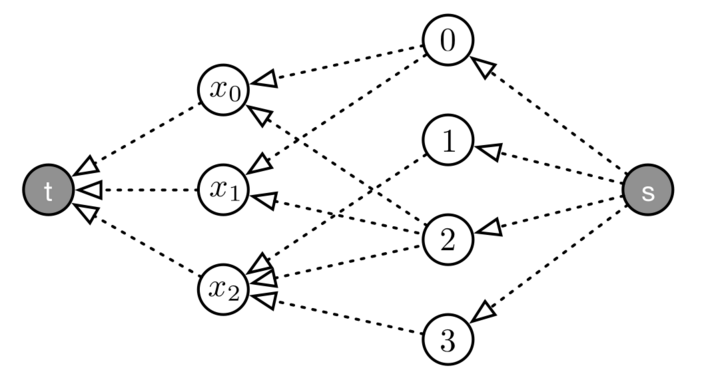
Dopodiché si cerca di far passare del flusso dal nodo s al nodo t utilizzando degli archi che non sono ancora saturi. Si ripete questo processo finché non si riescono più a trovare percorsi.

In alcuni casi, si arriva ad una situazione che non è una soluzione anche se il problema di partenza è feasible e scegliendo dei percorsi diversi sarebbe stato possibile raggiungere una soluzione.
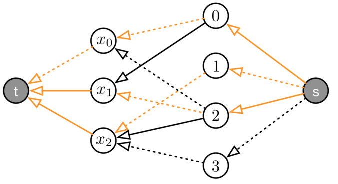
Quindi deve essere possibile fare l'undo delle scelte. Una possibilità è quella di utilizzare il backtracking, ma così facendo si ottiene una complessità esponenziale. Fortunamente c'è una strategia alternativa.
Si può costruire il grafo residuale, un grafo con gli stessi nodi del grafo del flusso, solamente che gli archi che nel grafo del flusso rappresentano un assegnamento vengono invertiti.
Più formalmente, c'è un arco a→b nel grafo residuale se e solo se c'è un arco a→b nel grafo originale e f(a→b) = 0 oppure c'è un arco b→a nel grafo originale e f(b→a) = 1.
Ovvero il grafo residuale contiene gli archi nei quali può ancora passare del flusso (indicati con un tratteggio) e gli archi dove è possibile togliere del flusso (indicati con una linea continua).

Questo nuovo grafo può essere utilizzato per trovare dei nuovi cammini dal nodo s al nodo t. Un possibile nuovo cammino è quello arancione.
Questo nuovo cammino può essere utilizzato per andare a trovare nuovi flussi nel grafo iniziale.
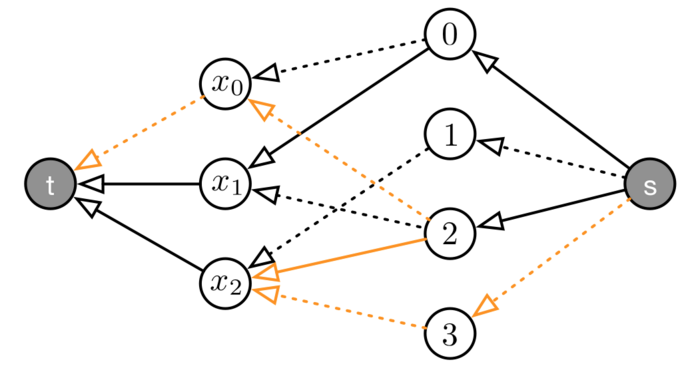 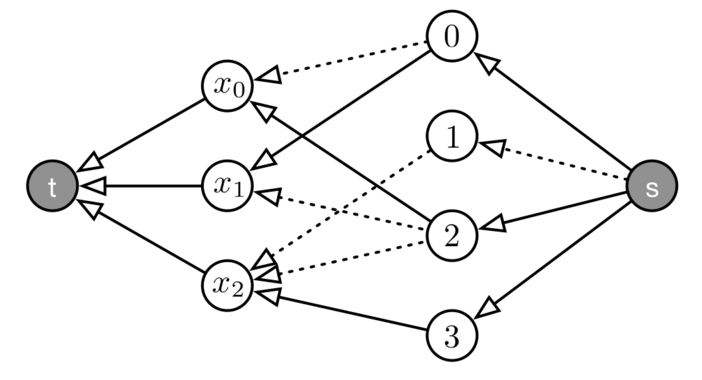
In questo caso il flusso sul nodo t è uguale al numero di variabili, quindi il vincolo è feasible.
La complessità dell'algoritmo dipende dalla ricerca dei cammini con Dijkstra, la cui complessità è lineare con il numero di archi e in questo caso coincide con la sommatoria delle cardinalità dei domini delle variabili. La ricerca dei cammini deve essere fatta al massimo per ogni variabile, quindi si ottiene come complessità O(|X| ∑[xi ∈ X]|D(xi)|), che è molto peggiore rispetto al filtering per il vincolo di diverso, il vantaggio è che viene fatto un filtering più efficace.
La strategia di verifica quindi, prima costruisce il grafo del flusso, dopodiché cerca di massimizzare il flusso che arriva al nodo t, se il valore ottenuto conincide con |X| allora il vincolo è feasible.
Tipicamente questo algoritmo viene implementato senza la costruzione del grafo, dal momento che possono essere usate direttamente le formule che rappresentano il vincolo. Il grafo viene utilizzato solo per rendere più semplice la spiegazione.
Per poter filtrare un valore devo considerare un arco che va da un valore ad una variabile e provare a costruire un ciclo tra i due nodi utilizzando il grafo residuale. Se non viene trovato questo ciclo e tra questi due nodi non c'è flusso, posso togliere quel valore dal dominio di della variabile.
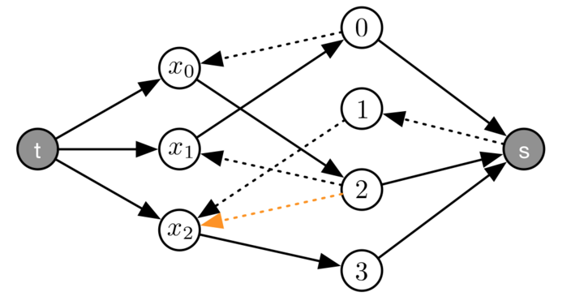
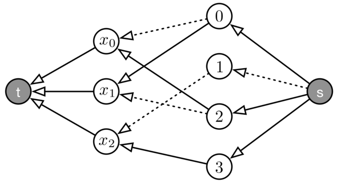
Questa condizione può essere semplificata considerando che non ci sia un ciclo tra il nodo v e il nodo xi nel grafo residuale. Questo avviene se e solo se v e xi sono in due componenti fortemente connessi distinti. Questo permette di utilizzare l'algoritmo di Tarjan per ottenere un efficenza maggiore.
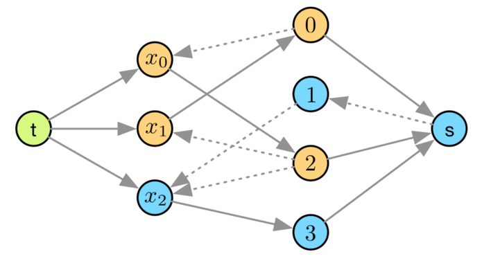
La complessità si riduce ad essere O(|X|+∑[xi ∈ X]|D(xi)|).
I vincoli globali sono dei vincoli che rappresentano un set di vincoli e risultano essere importanti perché sono molto espressivi e permettono di fare una propagazione più efficente e efficace.
Ci sono dei problemi in cui è necessario considerare quante volte un determinato valore viene assunto da una variabile e questo può essere fatto utilizzando una sommatoria di metavincoli.
Tuttavia questo approccio ha una propagazione pessima, pertanto conviene utilizzare il vincolo globale GCC.
GCC, ovvero Global Cardinality Constraint, viene utilizzato quando si vuole limitare l'occorrenza (cardinalità) di alcuni valori specifici per delle variabili.
GCC(X, V, L, U)
- X è un vettore di variabili xi
- V è un vettore di valori vj
- L è un vettore con le cardinalità minime lj per vj
- U è un vettore con le cardinalità massime uj per vj
L'idea è quella che tutte le variabili del vettore X hanno come dominio V e che ognuno dei valori debba comparire un numero limitato di volte, specificato dai vettori L e U (V, L, U devono avere la stessa dimensione).
La propagazione di questo vincolo avviene in due tempi come per Alldifferent:
Viene creato un grafo analogo a quello per Alldifferent.

Con la differenza che gli archi che vanno da s ai valori hanno una capacità massima uguale a uj e una domanda minima pari a lj.
L'algortimo parte cercado di soddisfare i vari vincoli di domanda

Anche in questo caso per trovare il percorso occorre utilizzare il grafo residuale, che viene definito in modo leggermente diverso, dal momento che ora gli archi hanno una capacità maggiore di 1.
Questa volta l'arco a → b è presente nel grafo residuo se:
Come side effect di questa definzione si ha che nel grafo residuo non è presente il vincolo della domanda per i vari archi.
Un'altra cosa da notare è che Alldifferent è un caso particolare di questo problema.
Una volta costruito il grafo residuale che rappresenta un assegnamento feasible è possibile andare a filtrare un valore se non compare in un ciclo e sempre allo stesso modo è possibile utilizzare i componenti fortemente connessi per rendere il processo più efficente.
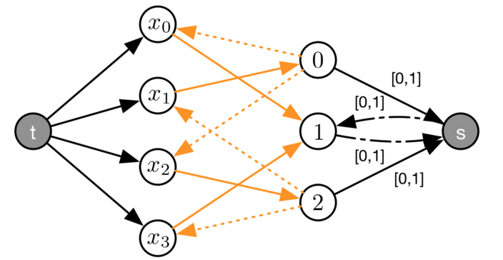
Nell'esempio non ci sono cicli che utilizzano gli archi 0→x0 e 2→x3 quindi è possibile effettuare il pruning del valore 0 da D(x0) e 2 da D(x3).
Tipicamente nei solver non è presente GCC ma è presente Distribute:
DISTRIBUTE(X,V,N)
- X vettore di variabili xi
- V vettore di valori vj
- N vettore con le cardinalità nj per le variabili vj
Le due principali differenze riguardano che i buond sulle cardinalità vengono specificati con D(nj) e il propagatore può filtrare le variabili nj, il che vuol dire che è possibile utilizzare Distribute per contare (?).
Mangiene la bound consistency su una sommatorioa
SUM(z,X) = z=<big>∑</big>[xi∈X]xi
Dove X è un vettore di variabili e z è la variabile che rappresenta il risultato della somma.
Conviene utilizzare questo vincolo piuttosto che le singole somme binarie perché queste richiedono più operazioni per dedurre i bound, inoltre, l'ordine con il quale vengono processati influisce sul numero di operazioni. Quindi il vincolo globale permette di avere la stessa propagazione in modo più efficente.
Somme binarie con n termini:
- Read: 2(n−1)
- Write: n−1
- Sum: n−1
Sum globale:
- Read: n
- Write: 1
- Sum: n−1
Si possono ottenere ulteriori miglioramenti all'efficenza utilizzando il calcolo incrementale, questo perché l'algoritmo di propagazione viene chiamato molte volte durante la risoluzione di un problema.
L'idea è quindi quella di andare a tenere una cache dei risultati parziali in modo da avere delle informazioni per l'esecuzione successiva del pruning. Servono però ulteriori informazioni riguardo quali valori e quali variabili sono state pruned.
Alla prima invocazione viene eseguito l'algoritmo normalmente
ub(z)=<big>∑</big>[xi∈X]xi
ed è possibile tenere in cache il valore massimo di z: ub$(z).
Supponendo che sia stato eseguito il pruning della variabile xj, al passo successivo il bound può essere aggiornato con
ub(z)=ub
$(z) − old(xj) + xj
ottenendo così l'aggiornamento dell'upper bound in tempo costante.
Per fare filtering sul dominio di xi si può utilizzare
ub(xi) = ub(z) - <big>∑</big>[xh ∈ X, h ≠ i]lb(xh)
Cioè viene preso il più grande valore di z e si tolgono i minimi valori per ogni altra variabile.
Al secondo passo si può eseguire il calcolo con (assumendo che sia stato eseguito il pruning di xj (la formla è da correggere.
ub(xi) = ub(z) - ( lb
$(xi) − old(lb(xj)) + lb(xj))
In questo modo si riesce a fare il pruning di una singola variabile in tempo costante.
Perché il tutto funzioni il solver deve permettere di:
La soluzione più semplice per tenere la cache di un valore è quello di utilizzare una variabile normale. Questo approccio non funziona bene con il backtracking, dal momento che il valore della variabile non può essere ripristinato.
Serve quindi un modo per tenere lo storico dei valori della variabile, conviene quindi utilizzare uno stack di valori, man mano che si scende nell'albero si effettua il push di un valore, quando si fa backtracking si esegue un pop. Nel caso ci siano degli aggiornamenti parziali, viene aggiornato il valore presente in cima allo stack.
Questo sistema di gestione prende il nome di timestamp mechanism, viene tenuto un timestamp che viene incrementato ogni volta che si esplora un nodo. Viene eseguito il push in cache solo se il valore dei timestamp è aumentato, altrimenti si aggiorna il valore. Quando viene fatto un backtrack, viene eseguito un pop.
Nei solver questo sistema prende il nome di trailing e lo stack viene chiamato trail, questo perché vengono utilizzati anche per tenere traccia dei domini delle variabili.
L'algoritmo di filtering finora utilizzato è:
dirty = True
while dirty:
dirty = False
for cj in C:
dirty = dirty or cj.filter()
Per ottenere questa informazione è necessario modificare il vecchio algoritmo di filtering.
Come prima cosa serve un metodo prune(xi, v) che permette di eseguire il pruning del valore v da xi, questo perché il metodo deve essere in grado di notificare ai vari vincoli che la variabile è stata modificata.
Serve inoltre un nuovo metodo cj.filter(xi), che esegue la propagazione incrementale sapendo che è stata tagliata la variabile xi.
La versione base del metodo prune è:
def prune(xi, v):
# rimuove il valore dal dominio
for cj in C:
cj.filter(xi)
che risulta inefficente e ricorsiva. Conviene quindi utilizzare una coda FIFO ed aspettare ad effettuare le chiamate:
def prune(xi, v):
# rimuove il valore dal dominio
for cj in C:
Q.push((cj,xi))
Che può essere ulteriormente migliorato andando a controllare che non ci un evento di pruning non sia già in coda e che la variabile compaia nello scope del vincolo:
def prune(xi, v):
for cj in C:
if xi in X(cj) and (cj,xi) not in Q:
Q.push((cj,xi))
Una volta popolata la coda è possibile processare i vari eventi con:
while len(Q) > 0:
cj, xi = Q.pop()
cj.filter(xi)
Per semplificare la gestione del filtering nel caso alcuni vincoli siano senza filtering incrementale è necessario introdurre una wildcard *, l'evento (cj,*) equivale alla chiamata cj.filter().
Per inizializzare la coda è possibile utilizzare questi eventi per ogni vincolo. Il nuovo algoritmo prende il nome di AC3.
Q = [(cj,∗) for cj in C]
while len(Q) > 0:
cj, xi = Q.pop()
if xj == ∗ or not incremental(cj):
cj.filter() # may call prune(xi, v)
else:
cj.filter(xi) # may call prune(xi, v)
Nelle slide c'è un esempio di esecuzione dell'algoritmo.
Dall'esempio emerge un caso interessante, quando viene eseguito il pruning per un vincolo cj vengono inseriti nuovi eventi di pruning per lo stesso vincolo, questo perché alcuni vincoli hanno bisogno di più passaggi per raggiungere la convergenza e per semplicità conviene utilizzare il solver per effettuare più iterazioni piuttosto che andare a complicare l'algoritmo di filtering.
A causa di questo approccio il solver può arrivare ad una soluzione feasible prima di processare tutta la coda, tuttavia non può terminare l'esecuzione perché deve verificare che non ci siano dei domain wipeout.
La parte complessa riguarda scegliere quando scartare i dati per evitare di avere dei problemi con il consumo della memoria.
L'idea più diffusa è quella di tenere in memoria un valore finché ci sono degli eventi in coda per il quale può essere necessario. Cioé bisogna tenere il valore di xi finché ci sono degli eventi del tipo (cj,xi)
L'utilizzo di vincoli reificati può portare ad una propagazione debole perché il solver non sempre riesce a stabilire che due valori sono in mutua esclusione.
Il tipico problema è quello dei vincoli di costo:
z = 1(x=0) + 3(x=1) + 4(x=2)
L'idea è quella di guardare al problema da un'altra prospettiva, utilizzando un vettore dei costi V e di utilizzare la variabile x come indice del vettore. Modellando la relazione del costo con z = vx
ELEMENT(z,V,x), where:
- z is an "output" variable
- V is a vector of values (or variables)
- x is an "index" variable
Grazie a questo vincolo è possbile modellare esspressioni del tipo:
Il costo è la sommatoria dei costi dei singoli assegnamenti delle variabili X:
z = <big>∑</big>[xi ∈ X]cxi
Il prodotto in posizione 0 deve pesare meno del prodotto in posizione 1:
wx0 < wx1
dove xi rappresenta il tipo di prodotto nella posizione i-esima e W è il vettore dei pesi
xi è la posizione dell'item i-esimo e yj è l'item che si trova nella posizione j
yxi=i
Y = [1,3,0,2] X = [2,0,3,1] Ovvero yxi contiene l'item che si trova nella posizione xi cioè i.
Quest'ultimo vincolo è molto importante, perché permette di collegare più rappresentazioni diverse dello stesso problema ad esempio "item-at-position" con "position-for-item", permettendo così di scrivere vincoli migliori.
Supponendo che V sia un vettore di valori, si ha come bound consistency:
ub(z) = max[u ∈ D(x)] vu
lb(z) = min[u ∈ D(x)] vu
Mentre per ottenere GAC:
w ∈ D(z) is not pruned iff ∃ u ∈ D(x) : vu=w
Per effettuare la propagazione in modo incrementale è necessario tenere in memoria per ogni valore w che compare in D(z) il suo supporto di D(x) che prende il nome di u(w).
Quando x viene tagliato, se u(w) è ancora nel dominio, w ha ancora supporto, altrimenti è necessario cercare nel dominio di x un nuovo supporto che andrà ad aggiornare la variabile u(w). Se non si riesce a trovare questo valore è possibile effettuare il pruning di w.
Una caratteristica interessante di questo propagatore è che non è necessario andare a ripristinare i precedenti valori u(w) quando si fa backtracking, perché se u(w) è un supporto per w in un nodo figlio, questo lo è anche nel nodo padre, perché tornando indietro il dominio di z può solo aumentare.
Sono una versione generalizzata dei vincoli binari che utilizza la propagazione incrementale tenendo traccia dei supporti in modo analogo ad Element.
TABLE(X,T), where:
- X is a vector of variables
- T is a vector of tuples, corresponding to the valid assignments
Permette di modellare in modo efficente situazioni del tipo "vettori a scalare".
Questo vincolo è interessante perché permette di modellare facilmente situazioni difficili da modellare. Tuttavia la complessità della propagazione aumenta con la dimensione della tabella.
Il propagatore per questo vincolo cerca di trovare un supporto, ovvere una tupla della tabella, per tutti i valori che compaiono nel problema.
Il propagatore quindi processa le tuple una ad una e si ferma quando tutti i valori hanno supporto o quando non ci sono più tuple.
Si può anche utilizzare la versione incrementale che tiene in memoria i vari supporti trovati.
Il PLS ha due proprietà interessanti:
Per generare un PLS si possono andare a mettere dei numeri casuali all'interno delle celle.
Meno celle sono riempite, maggiori soluzioni sono possibili e quindi il problema è facile da risolvere.
Allo stesso modo, più celle sono riempite, maggiore è la propagazione e il problema resta sempre facile da risolvere, anche se può essere che non venga trovata una soluzione.
Andando ad aumentare il numero di celle riempite, si arriva ad un punto in cui la probabilità di trovare una soluzione feasibile varia bruscamente.
Questo prende il nome di transizione di fase ed è molto comune nei problemi combinatori (ovviamente su altri parametri).
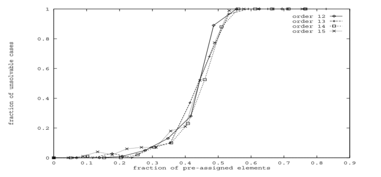
Di conseguenza con poche celle riempite ci sono più soluzioni pertanto è più facile trovare una soluzione.
Tuttavia risolvere il problema è facile anche se ci sono tante celle riempite perché queste fanno molta propagazione.
C'è un range di valori per i quali trovare una soluzione difficile e ricadono nella transizione di fase.

Pertanto, se un problema ha una transizione di fase, le istanze più difficili tendono ad essere vicine al punto di transizione.
La transizione di fase dipende da:
Trovare una strategia di ricerca generale per il PLS non è semplice, utilizzare min-size-domain per scegliere la variabile da assegnare aiuta, ma è difficile andare oltre. Questo perché la scelta del valore dipende tanto dall'istanza.

Nel grafico le X rappresentano il numero di backtracking e le Y il numero di problemi risolti.
Questo comportamento è causato dal fatto che ogni tanto l'euristica di selezione del valore/variabile esegue una scelta sbagliata all'inizio della ricerca e pertanto vengono generati tanti rami infeasible.
La cosa brutta è che questi errori tengono ad apparire in modo casuale e sono comuni alla maggior parte dei problemi combinatori.
Tipicamente è facile trovare una buona euristica che funziona generalmente bene, c'è però un problema con i vari tie-breaker. Per andare a rompere questo si può andare a caso.
Questo metodo esegue una scelta casuale sia della viarabile che del valore. Così facendo la ricerca diventa stocastica.

Dal grafico si può notare che la probabilità di risolvere un problema con pochi backtrack è molto alta, anche se rimangono delle situazioni in cui possono essere necessari molti backtrack.
Per i problemi combinatori la probabilità di dover fare tanti backtrack è bassa ma non trascurabile. In questo caso si dice che i problemi sono heavy tail, ovvero la coda della distribuzione della probabilità decade con un andamento sub-esponenziale.
La cosa importante è che è facile essere fortunati ed avere pochi backtrack, ma prima o poi ci saranno casi sfigati.
Questo vale sia per un approccio deterministico su problemi stocastici, sia con un approccio stocastico su problemi deterministici.
Quando c'è un comportamento heavy tail, conviene effettuare un restart della ricerca dopo un tot numero di fail. In questo modo non vengono mai raggiunti i casi in cui il numero di backtrack è troppo alto.
Risulta comunque vantaggioso riavviare dal momento che è più probabile trovare un'istanza con pochi backtrack che finire nella coda lunga. Lo svantaggio c'è quando il problema è infeasbile, perché prima di riuscire ad esplorare tutto l'albero vengono fatti vari riavvii.
La cosa bella è che se il numero di backtrack massimi aumenta, la strategia risulta comunque completa.
Ci sono due strategie di riavvio principale, il numero indica dopo quanti backtrack riavviare:
Una modifica comune a queste due strategie di riavvio è quella di utilizzare un fattore di scala s.
Per risolvere dei problemi grandi tipicamente è necessario porre un limite di tempo ottenendo un'esplorazione dell'albero di ricerca come in figura.

Utilizzando una ricerca casuale con riavvio è possibile esplorare l'albero in modo più uniforme:

Questo approccio risulta utile anche per il problemi di ottimizzazione, in quanto ogni volta che si ottiene una soluzione migliore di quella corrente si ottiene un nuovo bound.
Per affrontare COP di grandi dimensioni conviene utilizzare un approccio di ricerca locale, questo perché tipicamente nei problemi reali le soluzioni migliori sono tra loro vicine.
La Local Search (LS) utilizza un approccio alla Hill Climbing per cercare nel vicinato di una soluzione, una versione migliore.
Così facendo si ottiene un algoritmo anytime che lavora su un vicinato di dimensioni ridotte e che può essere esteso in modo che possa uscire dagli ottimi locali con tecniche di randomizzazione, simuleated annealing, algoritmi genetici ecc.
Large Neighborhood search utilizza un approccio alternativo, considerando un vicinato più grande, in modo che se l'algoritmo si incastra in un ottimo locale, sia in grado di raggiungere un altro ottimo.
Per definire questo vicinato è possibile tenere fissate delle variabili della soluzione corrente e rilassare le altre. La nuova soluzione viene quindi ottenuta definendo un nuovo CSP che vincola il valore delle variabili tenute fisse (prendono il nome di fragment).
LNS ha vari vantaggi:
Ci sono però degli svantaggi, infatti, LNS è un approccio basato su euristiche, quindi non è detto che la soluzione che trovi sia ottima e in più ci sono molte scelte progettuali da fare. Alcune delle quali sono:
La scelta delle variabili da rilassare influenza la completezza dell'esplorazione.
Tipicamente si cerca di rilassare un numero di variabli tale da avere più del 50% di probabilità di ottenere un'esplorazione completa. Nella maggior parte dei casi la scelta delle variabili viene fatta a mano e offre le prestazioni migliori anche se ci sono approcci automatici come propagation based o learning based.
Degna di nota è anche la scelta casuale delle variabili che funziona abbastanza bene perché garantisce un'esplorazione uniforme dello spazio di ricerca.
Tipicamente la neighborhood viene determinata dal numero di variabili da rilassare e a causa della propagazione delle variabili, lo spazio di ricerca è più o meno grande.
Per ottenere dei sotto problemi si può effettuare la propagazione durante l'aggiunta dei vincoli che fissano le variabili:
for i in select_fragment():
add constraint xi=σ(xi) to P′
--> propagate until fix point <--
In questo modo si riesce a tenere la dimensione dello spazio di ricerca sopra una determinata soglia, inoltre, per misurare la dimensione dello spazio di ricerca si può utilizzare il prodotto carteisano dei domini delle variabili.
La scelta delle variabili da fissare viene effettuata tenendo conto della propagazione.
Si parte da una lista L con le variabili non fissate, inizialmente vuota, dalla quale viene scelta quale variabile filtrare. Se la lista è vuota la scelta viene fatta a caso.
Ogni volta che viene fissata una variabile, viene calcolato uno score per tutte le altre variabili non ancora fissate.
scorei = 1 − (|D(xi)∣after)/(|D(x)|ibefore)
Solo le variabili che hanno score maggiore 0 vengono inserite nella lista come possibili candidate per la prossima estrazione.
Essendo un algoritmo commerciale, non viene specificato con che criterio viene estratta la variabile da L e cosa succede se si verfica della propagazione sul dominio di una variabile già in lista. Intuitivamente però, viene scelta la variabile con lo score più alto e nel caso il dominio cambi, si tiene valido lo score più alto.
Questo metodo prende il nome di Propagation-Guided LNS, e funziona sotto l'ipotesi che ci siano delle variabili che sono fortemente correlate tra loro e che sia una buona idea tenerle fisse, tipicamente questo è vero per i problemi reali.
C'è anche una versione reverse di questo algoritmo, nella quale vengono scelte le variabili da tenere rilassate. L'idea è quella di andare ad allargare lo spazio di ricerca finché non diventa abbastanza grande.
L'idea della versione reverse è corretta ma non è più guidata dalla propagazione ed è più difficile da applicare.
Gli ideatori di questi algoritmi li applicano assieme, viene prima utilizzato PGLNS e poi la versione reverse, finché non viene trovato un sotto-problema della dimensione voluta e nel caso reverse viene utilizzato come score la riduzione media dei domini per ogni variabile nell'iterazione di PGLNS.

In CP risulta facile andare a definire delle euristiche di ricerca ottimizzate per un problema.
Tuttavia implementare una ricerca ad hoc richiede di conoscere come funziona la CP e tipicamente trovare un'euristica ottima richiede molto tempo.
Se non viene utilizzata un'euristica ad hoc, le prestazioni ottenute sono tipicamente scarse.
Negli utlimi 15 anni sono state proposte delle euristiche generiche che si comportano abbastanza bene.
Queste euristiche si basano su 3 idee principali:
Strategia di ricerca progettata per problemi infeasible, in modo da poter prima utilizzare LNS per trovare una soluzione buona e poi applicare FDS per fare la prova dell'ottimalità.
L'idea è quella di andare ad imparare dai fallimenti.
Perché l'algoritmo funzioni, le decisioni di branching devono essere binarie (= e diverso, split di un dominio, ecc.), serve poi un pool contenente tutte le possibili decisioni che possono essere prese.
Vengono poi estratte le decisioni da questo pool e se non sono già state prese come effetto collaterale, vengono creati dei nuovi di ricerca e viene fatta la propagazione. Se alla fine del pool ci sono delle variabili non ancora istanziate, vuol dire che il pool era troppo piccolo e ne serve uno più grande (generazione incrementale del pool per problemi grandi).
P = initial pool of decisions
while len(P) > 0 :
choose a decision
if the + or − constraint is satisfied:
break # the decision is "taken"
generate + and − search nodes and propagate
if both nodes fail:
backtrack
move to one of the child nodes
L'approccio utilizzato è simile a quello di una ricerca DFS con la differenza che le possibili decisioni si trovano all'interno di un pool, in modo da poter tenere traccia di uno score, e la propagazione viene fatta subito per entrambi i branch, perché è necessaria per calcolare lo score.
Lo score di una decisione viene calcolato sommando lo score dei singoli branch:
decision score = s+ + s-
I vari score vengono misurati utilizzando la reduction:

ovvero il rapporto tra la dimensione dello spazio di ricerca prima e dopo la propagazione.
Lo score di ogni branch viene calcolato come:

Dove:
FDS sceglie sempre la decisione con lo score più basso e segue il branch con lo score più basso, questo perché uno score più basso porta ad una propagazione migliore e l'obiettivo di questa euristica è quello di fallire in fretta.
Questa euristica funziona particolarmente bene con i restart, perché al primo giro impara quali sono le decisioni migliori e nelle iterazione successive le prende subito in modo da sflotire il più in alto possibile.
L'utilizzo di FDS porta quindi ad ottenere un albero nel quale i sotto alberi sinistri tendono a fallire più frequentemente e le decisioni che portano ad un doppio fallimento (entrambi i branch falliscono) vengono utilizzate più frequentemente.

Una delle applicazioni classiche di CP riguarda la risoluzione dei problemi di scheduling, questo perché si riescono ad ottenere ottimi risultati.

Tipicamente vengono aggiunte due attività farlocche per rappresentare l'inzio e la fine della produzione.
(Nell'esempio dell'immagine c'è un solo tipo di risorsa)
L'obiettivo è quello di minimizzare il makespan, assegnando lo start time a tutte le attività, rispettando i vari vincoli.
Come variabili vengono utilizzati si che rappresentano lo start time delle varie attività, con dominio {0 ... eoh}.
L'obiettivo è quello di minimizzare la massima terminazione:
min z = max[i = 0..n−1] (si + di)
mentre le precedenze vengono modellate con
si + d i ≤ sj
Per le capacità, se queste sono unitarie, modellare il vincolo delle risorse è semplice, basta che due attività che richiedono la stessa risorsa non siano sovrapposte.
(si + di ≤ sj) ∨ (sj + dj ≤ si)
Se invece le capacità non sono unitarie l'approccio deve cambiare. Un'idea è quella di andare a mettere tanti vincoli per ogni unità di tempo che controlla che la sommatoria delle capacità non superi la capacità massima.
La propagazione è comunque pessima perché richede dei metavincoli, si può migliorare considerando solo gli intervalli di tempo in cui inizia un'attività.
Vincolo globale che permette di modellare il vincolo sulla capacità di una singola risorsa.
CUMULATIVE(s,d,r,c)
- s is a vector of start time variables si
- d is a vector of durations di
- r is a vector of requirements ri
- c is the capacity

Il problema è che fare filtering risulta NP-Hard pertanto gli algoritmi di filtering utilizzati sono sub-ottimi dal momento che fanno un filtering incompleto. Dal momento che questo vincolo è molto utile, sono stati proposti molti algortimi di filtering (tutti incompleti).
L'idea è quelli di mantenere il controllo dell'utilizzo minimo della risorsa, considerati i vari domini delle variabili.
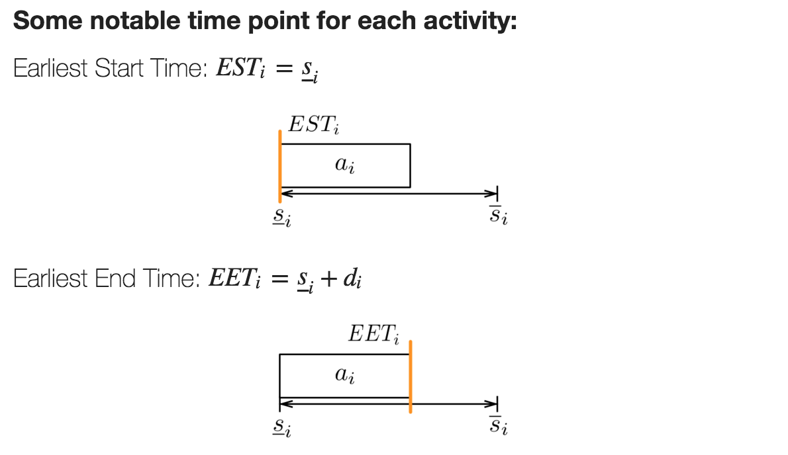

Se LST di un'attività è minore del EET, c'è di sicuro un intervallo temporale in cui quell'attività sarà sicuramente eseguita. Aggregando tutte le compulsory part di tutte le attvità si riesce a calcolare quante risorse saranno sicuramente richieste.
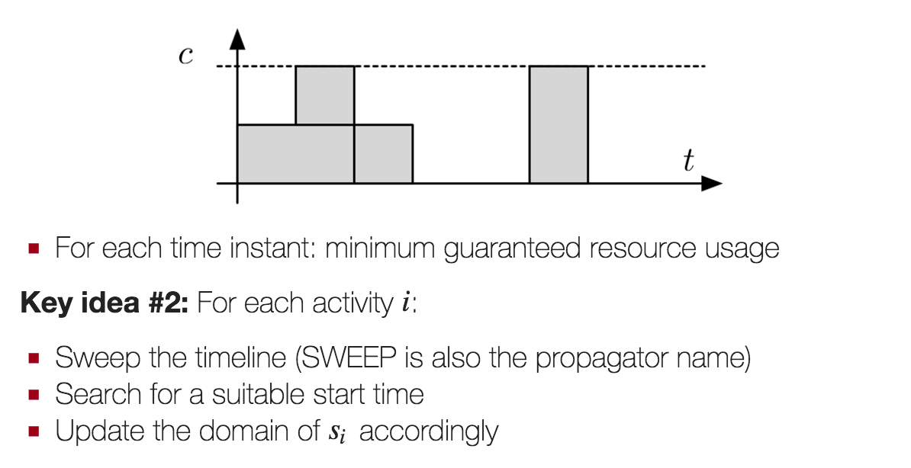
Una volta ottenuto il profilo minimo, si prova per ogni attività a cercare un possibile start time.
L'algoritmo SWEEP utilizza un cursore che parte dal minimo start time per l'attività corrente e si sposta in avanti in checking mode. Ad ogni passo eseguito in checking mode, viene controllato se ci sono abbastanza risorse per eseguire l'attività fino alla fine. Durante la fase di checking l'algoritmo si sposta solo tra i LST delle attività, perché è solo in quel caso li che il conusmo di risore può aumentare.
Se l'algoritmo in fase di checking si accorge che non ci sono abbastanza risorse per terminare l'attività, passa in modalità seeking. In questa modalità l'algoritmo cerca un nuovo start time per l'attività corrente, ovvero un momeno in cui ci sono abbastanza risorse per permettere l'avvio dell'attività. Durante questa fase l'algoritmo si sposta solo sugli EET, perché è solo quando finisce una parte obbligatoria che si possono liberare delle risorse.
Quando la seeking mode trova un possibile start time, l'algoritmo torna in fase di checking per verificare che l'attività abbia abbastanza risorse per terminare.
Se l'attività riesce a terminare, allora viene aggiornato il minimo start time, utilizzando il punto in cui si è fermato il cursore in fase di seeking, altrimenti è necessario tornare in modalità seeking, alla ricerca di un nuovo possibile start time.
Se in fase di seeking si supera LST dell'attività corrente, il problema è infeasible, pertanto si può terminare con un fallimento.

Il profilo minimo delle attività viene fatto in O(n log(n)) e può essere fatto durante lo SWEEP. Lo SWEEP ha complessità O(n) e deve essere ripetutata n volte, quindi la complessità totale è O(n2).
quello che conta è l'idea
Considera delle coppie (Ω,i), dove Ω è un insieme di attività e i è l'attività per la quale si vuole eseguire il filtering.
L'algoritmo stabiliste se l'attività i non può precedere le attività in Ω e aggiora D(si) sulla base di questa informazione.
Tipicamente funziona bene quando i domini degli start time sono piccoli La complessità è comunque O(kn2).
Utilizza in concetto di energia, ovvero risorse richieste per tempo.
Viene poi valutata la richiesta di energia in determinati intervalli di tempo. Se questa sfora il limite massimo il problema è infeasible, altrimenti se c'è un potenziale sforamento viene fatto del pruning.
Funziona meglio delle precedenti, ma ha complessità cubica.
Approccio molto recente (2012/2013) che mescola le idee precedenti. Ha una complessità O(n2) ma che deve essere rieseguito fino al fix point. Risulta più potente di Edge Finder.
Tipicamente l'obiettivo è minimizzare il makespan, far partire il prima possibile le attività aiuta a trovare soluzioni migliori.
In più i problemi di scheduling hanno delle meteriche di costo regolari, ovvero metriche per le quali quando aumento il valore di una variabile senza cambiare il valore delle altre peggiorano sempre.
Per scegliere la variabile da assegnare si può pensare di prendere quella che ha meno precedenze, tuttavia questa ricerca può essere pesante.
Conviene quindi prendere la variabile che ha lo start time più basso possibile. Con questa scelta è facile che ci siano molte situazioni di parità, pertanto serve un criterio di tie-breaking efficace, come la scelta della variabile con LET minore, ovvero con la deadline più piccola.
Possono esserci dei pareggi anche in questo caso e tipicamente, una volta raggiunto questo punto, si segue l'ordine dato dall'indice delle variabili.
Questo approccio prende il nome di priority based scheduling ed è una famosa euristica per risolvere lo scheduling con le ricerche greedy. Non sempre però porta ad avere una soluzione ottima al primo colpo ed è necessario andare a fare backtracking.
Impostare il vincolo in backtracking che lo start time sia diverso è troppo debole, dal momento che nei problemi reali i domini sono molto grandi.
L'idea è quindi quella di sostituire il vincolo di diverso con il tag postponed.
Una variabile post-posta non può essere scelta per fare branching finché il suo earliest start time non viene modificato.
Il problema è che questa strategia di branching è incompleta perché non esplora tutto l'albero di ricerca.
C'è però una regola di dominanza che deriva dal fatto che la funzione di costo è regolare e che garantisce che la parte di albero non esplorata contenga solamente soluzioni sub-ottime.
La regola di dominanza viene persa nel caso la funzione costo riguardi anche dei costi legati all'immagazinamento, in questo caso conviene utilizzare il domain splitting.
Questa strategia prende il nome di SetTimes
Il problema dello scheduling può comparire anche con la complicazione che le durate delle attività siano stimate, pertanto non è possibile definire subito uno scheduling totale.
Questo problema può essere risolto andando ad aggiungere delle nuove precedenze per evitare dei conflitti nell'utilizzo delle risorse.
Si parte dalla soluzione ottima ottenuta risolvendo il CSP, considerando le durate stimate come se fossero esatte.
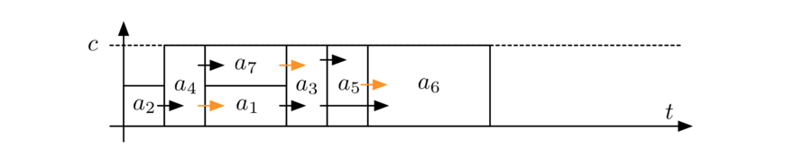
Si vanno poi ad esplicitare tutte le precedenze, sia quelle originali, che quelle implicite fornite dalla soluzione ottima.

Rappresentando con un grafo quanto ottenuto e considerando le attività come archi con una richiesta di flusso, è possibile utilizzare un propagatore simile a quello per GCC in modo da trovare solamente le precedenze che fanno parte del POS.

Il POS ottenuto diventa quindi: